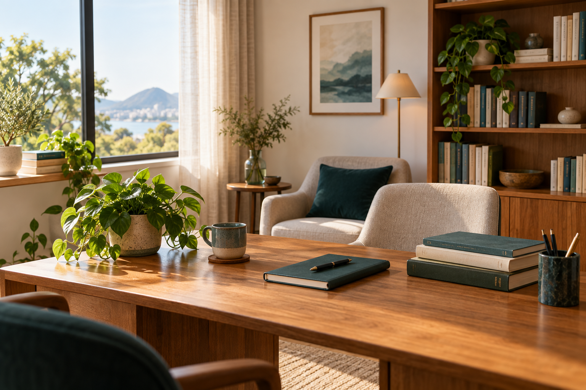

Missão
Transformar aprendizagem e desenvolvimento com cuidado, conhecimento e orientação individualizada.
Aprendizagem · desenvolvimento · bem-estar
Uma atuação ética, científica e personalizada para apoiar pessoas, famílias, escolas e organizações.
Consultoria Educacional Psicopedagogia Neuropsicopedagogia Desenvolvimento Humano Saúde Mental Corporativa

Quem somos
Uma atuação que conecta educação, saúde e desenvolvimento humano, respeitando a história e as necessidades de cada pessoa e instituição.
Pedagoga e especialista em Psicopedagogia e Neuropsicopedagogia, Josineide integra diferentes perspectivas para apoiar a aprendizagem e o desenvolvimento. Seu trabalho alcança crianças, famílias, escolas, empresas e profissionais da educação.
Transformar aprendizagem e desenvolvimento com cuidado, conhecimento e orientação individualizada.
Contribuir para ambientes mais inclusivos, saudáveis e favoráveis ao desenvolvimento.
Ética, ciência, respeito às diferenças e compromisso com cada trajetória.
Educação, aprendizagem e bem-estar
Conheça a especialista
Pedagoga, consultora educacional e consultora em saúde mental corporativa, com atuação em aprendizagem, desenvolvimento humano e Neurodisciplina Consciente.
Áreas de atuação
Atendimento para crianças com dificuldades de aprendizagem, considerando suas necessidades e seu contexto.
Apoio aos pais com estratégias para o dia a dia, organização de rotinas, limites e desenvolvimento.
Para quem é o atendimento
O acompanhamento e as consultorias são orientados pelo contexto, pelos objetivos e pelas necessidades de cada público.
Próximo passo
Para agendar um atendimento ou solicitar uma consultoria, entre em contato e conte um pouco sobre o que você precisa.